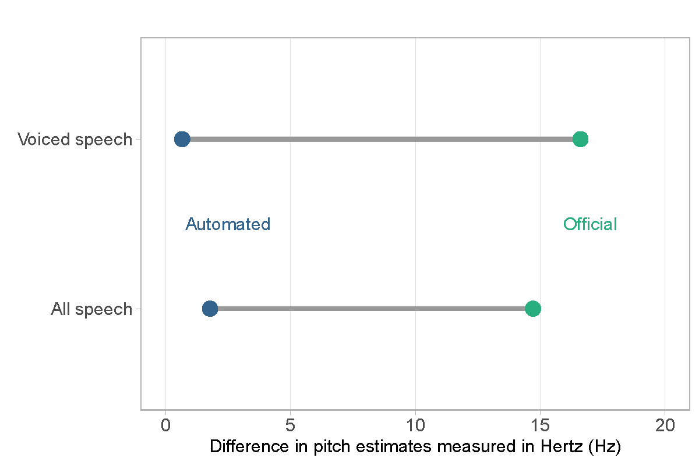

Research
Working Papers
Automated Annotation of Political Speech Recordings

Audio and video recordings are increasingly popular for studying the nonverbal dimensions of political speech. However, annotations such as timestamps and speaker tags that accompany these recordings are often inaccurate, disparate, or entirely lacking, which significantly limits the ability to systematically explore the political implications of nonverbal speech. The purpose of this paper is two-fold. First and foremost, I validate the empirical use of political speech recordings by investigating the accuracy of annotations across multiple countries and their sensitivity to the estimation of nonverbal features. Second, I develop a method that can automatically annotate speech recordings with timestamps, speaker tags, the text of speech, and nonverbal features with close to human accuracy, while still being invariant to language and speech setting (e.g. legislative vs. campaign speech). I demonstrate the potential of annotated speech recordings with two substantive applications based on a newly compiled dataset of more than 20,000 hours of aligned text-audio data of parliamentary speech from six European countries.
Elite Partisan Polarization in Nonverbal Communication (w. Frederik Hjorth)
Elite polarization is an important feature of democratic politics and is in some cases rising sharply, with potentially adverse consequences for democratic citizenship. Political scientists have developed an array of tools for characterizing elite conflict in communication, typically based on legislative speech. However, these approaches consider only the verbal content of communication. We expand the study of elite conflict and polarization to the nonverbal dimension using audio data from more than a decade of parliamentary proceedings in Denmark’s parliament. We find that elite partisan polarization is clearly manifested in legislators’ vocal style, that polarization in vocal style predicts parliamentary voting, and that elite vocal style predicts mass affective polarization. We also document the findings’ robustness to accounting for the verbal content of speech. Our findings document a novel dimension of elite partisan polarization, broadening our understanding of how elites communicate partisan conflict to citizens.
Ongoing Projects
A Dynamic Theory of Descriptive Representation (w. Helene Helboe Pedersen)
Soy un Perdedor: What Happens When Politicians Lose? (w. Roman Senninger and Mathias Wessel Tromborg)